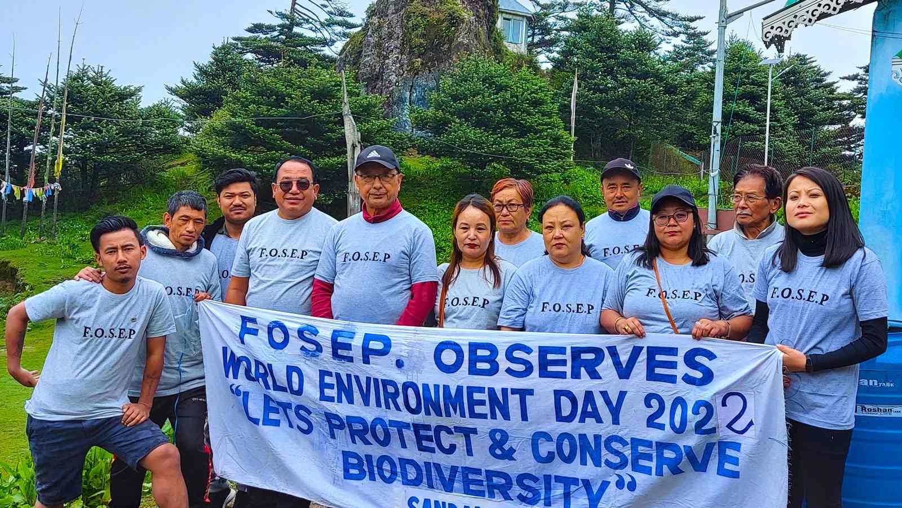

World Environment Day · 2022
“Let's protect & conserve biodiversity”
FOSEP marked World Environment Day 2022 at Sandakphu, renewing its pledge to the fragile high-altitude ecosystem of the Singalila ridge.